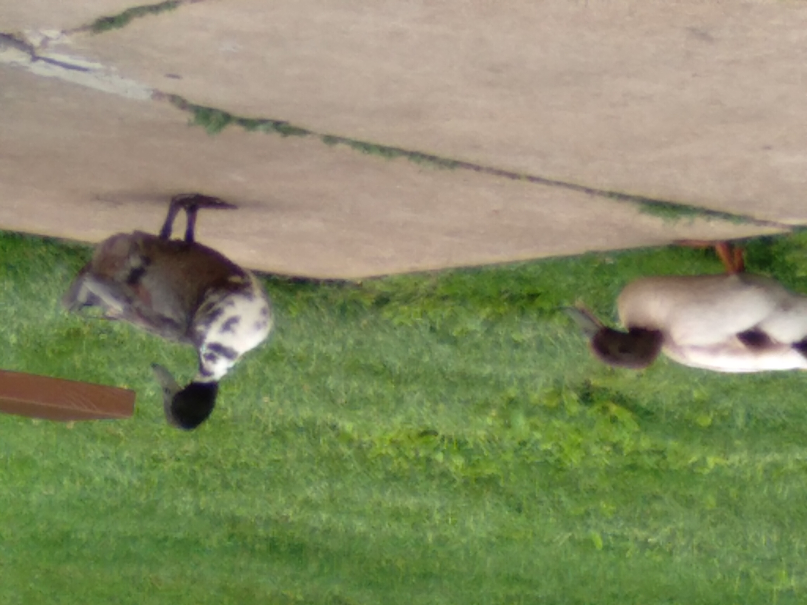
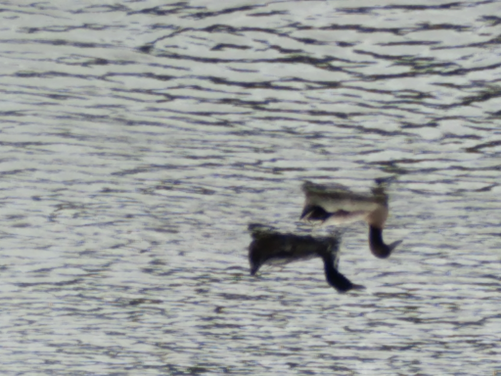

On May 17, 2021 my dog and I went for our first outside of neighborhood walk. I had adopted her just before my right leg was amputated and just started training her. She heels at my left side at my slow walker pace in the neighborhood. There isn’t much distractions in the neighborhood. I was hoping she would be just as good in a park with lots of distraction. She is 63 lbs, and a former stray, so I hoped she would remember her training in a totally different environment.
The path we took way a paved one around the lake. The lake has two fountains shooting water very high. A few feet from our starting point was a couple feeding a duck breed I never saw.  Later, I did research and discovered the ducks were Lesser Scaups, male and female. See below.
Surprisingly, my dog wasn’t fazed by the ducks, people feeding the ducks or the fact that the path was adjacent to the lake on the left. We continued walking. The wind was very strong and started blowing spray from the fountains on us. My dog still behaved. People kept passing us and she was very well mannered. On the east side, the path veered slightly away fom the lake around a rocky hill next to the lake planted with blooming roses. A sign said to be ware of snakes. Luckily we didn’t see any. The right side was a gazebo. A little further on the two lesser scaups were now swimming in the water near the path.  We continued our walk enjoying the beauty of the area. We came upon a cattail section. I looked for fish, or frogs, but didn’t see any. A short tie later we were back at the path beginning.  As I was trying to take her picture, skateboarders rode past us. My dog was surprisingly behaved.
As I was trying to take her picture, skateboarders rode past us. My dog was surprisingly behaved.
I am amazed how well she behaved. Since I adopted her as a puppy, I wondered if she was a stray because she was spooked and ran from a previous owner. I now think she was born outside without an owner. I am an outdoors person and haven’t been in a park or other outdoors environment since my amputation. I greatly miss hikes. I am hoping my dog and I can go on hikes now that I have figured how to use a walker. A cane would be better, I haven’t figured out how to walk with a cane yet. Based on how well we did, hiking is back as an activity.